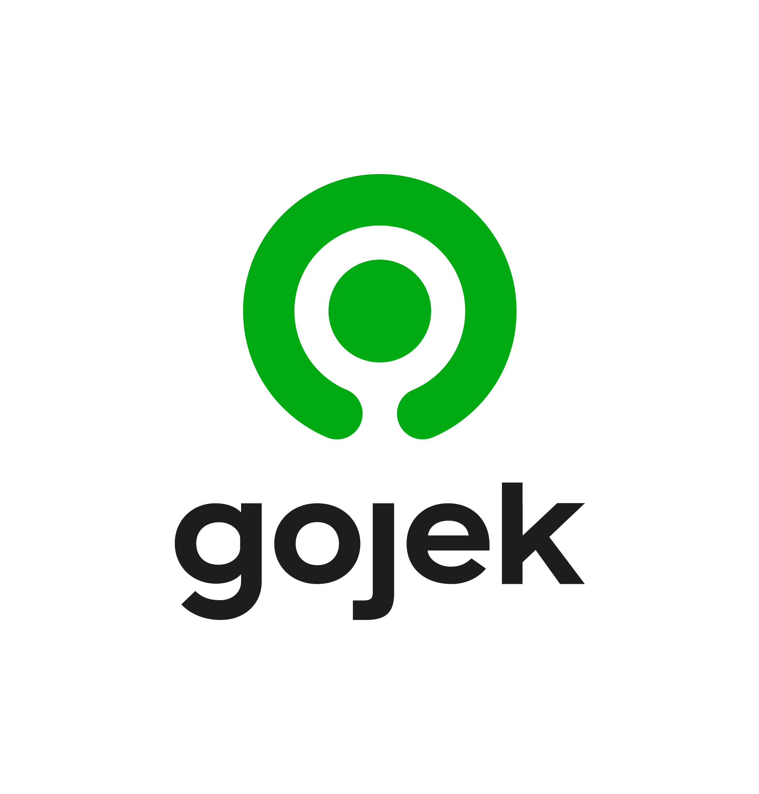

How Gojek Got Big by Selling the Next Round, Not the Next Profit
There is a strange thing about Gojek's rise. The company lost money almost every year of its life, yet it grew more valuable each year. In 2016 it was worth about 1.3 billion US dollars. By the time it merged with Tokopedia in 2021, the combined group was worth roughly 18 billion, and when it listed on the stock market in 2022 it briefly carried a market value near 31 billion. In none of those years did it post an annual profit.
So how does a business become more expensive while it keeps losing money? Gojek was not selling profit. It was selling a story about growth, and it sold that same story to a new buyer at a higher price every couple of years. To see how that worked, you have to start with something most people never look at: the company's founding documents.
A company is just permission to issue shares
When a company like Gojek (legally PT Aplikasi Karya Anak Bangsa) is formed in Indonesia, its articles of association — the anggaran dasar — set out two numbers that matter here. One is the authorized capital: the maximum number of shares the company is allowed to create. The other is the issued capital: the shares it has actually handed out. The gap between them is empty room — permission, sitting in a drawer, to print more ownership later.
At the start, the founders own almost all the issued shares, and those shares are worth little because the company is worth little. The clever part of the startup model is what happens to that empty room over the next decade. Each time a new investor arrives, the company usually does not take shares from the founders. It reaches into the drawer, creates brand-new shares, and sells them to the investor for fresh cash — at a higher price than the round before. That higher price per share is exactly what people mean when they say a startup "raised its valuation."
How issuing new shares raises the valuation
Private valuation is mostly arithmetic built on one negotiated number. If an investor puts in 100 million dollars for 10 percent of the company, you can back out the whole: 100 million divided by 0.10 is 1 billion. The company is now "worth" 1 billion — not because anyone valued its assets or profits, but because one investor agreed to one price for one slice. The next investor, a year later, looks at the growth (more users, more transactions, more cities) and pays a higher price per share. A round at a higher price is an up-round, and a chain of up-rounds is what Gojek built.
Two things follow, and they explain almost everything that came later.
First, the valuation is a paper number. It comes from the marginal price of a small slice, multiplied across every share in existence. Nobody ever paid 10 billion dollars for Gojek; one investor paid a price that implied 10 billion. The whole company was never tested at that price until the very end.
Second, each round is partly a bet on the next round. Someone who buys in at a 1.3 billion valuation is hoping the next investor pays a price implying 5 billion, which marks up their own shares on paper. That mark-up looks like a return long before the product turns a profit — which is why early backers cheer when a later, richer investor pays more. It validates their own paper gains.
Gojek's ladder, rung by rung
Gojek began in 2010 as a call-centre service connecting customers to motorbike-taxi drivers; the app that made it famous came years later. Once it launched, the funding ladder climbed fast:
- October 2015 — early venture investors including Sequoia Capital and DST Global put in an undisclosed amount.
- August 2016 — a round of over 550 million dollars led by KKR and Warburg Pincus pushed Gojek to about 1.3 billion dollars, making it Indonesia's first "unicorn." (Bloomberg, TechCrunch)
- 2017–2018 — new names arrived: Tencent and JD.com, then Google, Astra and Djarum in a round reportedly worth around 1.5 billion dollars. (Katadata, TechCrunch)
- Early 2019 — Gojek raised roughly 2 billion dollars at a reported 9.5 billion dollar valuation. (TechCrunch)
- 2019–2021 — strategic investors including PayPal, Facebook and Telkomsel joined, lifting the valuation to about 10.5 billion dollars. (Tracxn, Forge)
Notice what is not on that list: a profit. Across these years the business kept burning cash, much of it on driver subsidies and promotions to fight Grab. The valuation climbed anyway, because the thing being repriced upward was not earnings. It was growth, reach, and the belief that one company would eventually own the everyday digital life of Indonesia's 270 million people.
The merger and the IPO: cashing the story at full price
In May 2021, Gojek effectively acquired Tokopedia — valuing the e-commerce platform at around 7.4 billion dollars — and the combined group was renamed GoTo, worth roughly 18 billion. (Fortune, The Ken) This detail is often blurred: Gojek never had a solo IPO. The entity that went public was GoTo, the merged super-app group.
On 11 April 2022, GoTo listed on the Indonesia Stock Exchange at 338 rupiah per share, valuing it at around 28 billion dollars and raising about 15.8 trillion rupiah (~1.1 billion dollars); its market value touched roughly 31.5 billion on debut. (Nikkei Asia, Bloomberg) The financials it carried into that listing were brutal. By its own prospectus, the group lost about 16.7 trillion rupiah in 2020, and accumulated losses had reached roughly 65 trillion rupiah by 2021. Its first full year public, 2022, brought a net loss near 40 trillion rupiah (about 2.6 billion dollars), inflated by accounting charges from the merger itself. (Katadata, The Ken)
So the IPO was the final and biggest rung — the moment the paper valuation was finally tested in the open market at a premium price, while the company was still deeply unprofitable. The pitch on the prospectus was not "look at our profits." It was "look at our scale": tens of millions of users, millions of merchants and drivers, an ecosystem said to touch around 2 percent of Indonesia's GDP.
Here the public crowd, unlike private insiders, could vote with real liquidity — and the vote was harsh. The share price fell from 338 rupiah to around 50 by mid-2026. (IDX) The growth story that had carried the valuation up a private ladder for seven years did not survive contact with public investors who wanted a path to profit.
Why did investors keep believing?
If the company never made money, why did sophisticated funds keep paying more? Several reasons stack on top of each other.
First, the winner-take-all thesis. In ride-hailing, delivery and payments, more users attract more drivers and merchants, which improves service, which attracts more users. Whoever reached dominant scale first would own the market and could then cut subsidies and raise prices to become profitable. Under that logic, losses today were the entry fee for a monopoly tomorrow.
Second, fear of missing out, dressed as discipline. Once brand-name funds had marked Gojek up, the next fund either paid the higher price to join the obvious regional champion, or passed and risked explaining to its own backers why it missed Southeast Asia's biggest tech story. A rising valuation is itself a marketing document.
Third, the structure of private markets. Each round was priced by a handful of buyers, not a crowd. There was no daily share price warning anyone the company might be overvalued — only the last round's price, which always went up. Investors were, in a sense, grading their own homework, and the grade kept improving because the next investor agreed to pay more.
Fourth, and quietly the most powerful: a precedent named Amazon.
The Amazon comparison: same script, very different ending
Almost every "lose money now, win later" pitch of the last two decades borrows its authority from Amazon, and Gojek's was no exception. The parallels are real — and the differences matter more.
Amazon went public in May 1997 at 18 dollars a share, with a market value of only about 438 million dollars. Its prospectus said plainly the company was not profitable; it lost about 30 million that year. (HistoryLink, Statista) Jeff Bezos was proud of this. In a 1997 interview he said it would be "the dumbest" decision to make Amazon profitable then, because the company was reinvesting potential profits into the future — his "Get Big Fast" strategy. For years it looked like a bonfire of cash. In the dot-com crash the stock fell roughly 95 percent, to around 5.51 dollars by late 2001. (Benzinga)
Then the script paid off. Amazon posted its first net profit in the fourth quarter of 2001 — a slim 5 million dollars on 1.12 billion in revenue — and turned free-cash-flow positive in 2002, staying so ever since. (Fox News, Motley Fool) The company that lost money for years became one of the most valuable on earth, worth roughly a thousand times its IPO value.
Here is the part that gets lost when people use Amazon as a magic word. Amazon's story was eventually vindicated by the numbers, for concrete reasons Gojek did not obviously share:
- Bezos optimised for cash flow, not headline losses. Amazon's "losses" were largely aggressive reinvestment while the underlying operation learned to generate cash. The model had a clear line to profit even when the income statement was red.
- Amazon built a real moat. Its logistics network and, later, Amazon Web Services became a durable, high-margin engine rivals could not copy. Much of Gojek's spending bought subsidies that customers and drivers would abandon the moment the discounts stopped — market share that had to be rented every month.
- Amazon's market was all of US (then global) commerce. Gojek fought in a smaller, fiercely subsidised regional market against equally well-funded rivals like Grab, where a sustainable monopoly was far less certain.
So "unprofitable at IPO" describes both companies, but it is not the lesson. The lesson is what the unprofitability was buying. Amazon was buying infrastructure and a moat that later printed cash. GoTo's losses bought scale and brand, but the mechanism that turns scale into durable profit was still unproven when public investors were asked to pay a premium for it. That is why one stock is the most celebrated investment of a generation and the other lost most of its value within two years of listing.
What the story teaches
Gojek is a near-perfect illustration of how modern startups grow: not by earning money, but by repeatedly persuading a new and larger investor to pay a higher price per share — each round marking up the last — until the final, largest sale, the IPO, cashes the story at its peak. The engine is the empty room in the articles of association, the willingness to issue new shares, and a growth narrative compelling enough to make each buyer believe in the next buyer.
This model is not fraud, nor even unusual; it is how much of the technology economy is financed. But it carries one unavoidable truth that Amazon honoured and GoTo's public-market investors learned the hard way: a growth story can carry a valuation up a private ladder for years, but in the end the economics have to show up. When they do, you get Amazon. When they are still only a promise at the moment of the IPO, the public market is where that promise finally gets priced — often far below what the last private investor paid.
An analytical and historical piece, not investment advice.